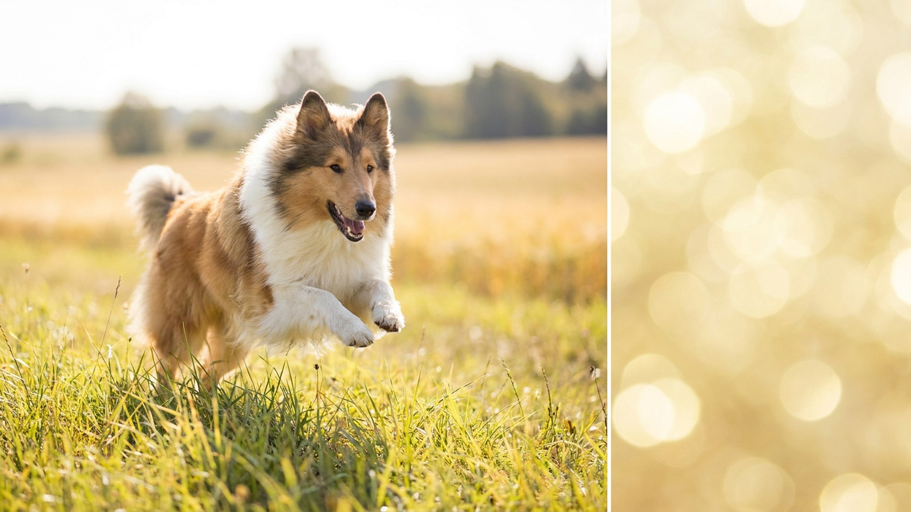

Колли смотрит вам в глаза и считывает интонацию раньше, чем вы договорили команду, — это не преувеличение, а рабочее наследие пастуха, который весь день читал жесты человека издалека. И тут ловушка: строгая рука, которая «ставит на место» многих собак, у колли даёт обратный эффект — собака не подчиняется, а закрывается. Ниже — как устроен характер шотландской овчарки, что делать с пастушьим инстинктом в городе и правда ли, что уход за этой шубой — каторга.
🐾 Ваш питомец — колли?
Заведите профиль в AnimaLife: приложение запомнит породу, возраст и вес и будет подсказывать по уходу именно для неё. Вопросы AI-ветеринару — круглосуточно и бесплатно.
Завести профиль → Завести в MAX →
У вас iPhone? AnimaLife есть в App Store
Колли веками отбирали не за хватку, а за тонкую отзывчивость к человеку — пастуху нужна была собака, которая слушает голос и жест, а не действует сама. Отсюда высокая чувствительность к тону. Резкий окрик, рывок, наказание такая собака воспринимает как разрыв контакта и «гасит» инициативу: становится нерешительной, начинает избегать хозяина.
Работает противоположное — спокойный голос, чёткие правила и поощрение за верное действие. Колли схватывает связь «сделал — получил похвалу» с нескольких повторов. Это одна из самых легко обучаемых пород именно потому, что хочет угодить. Задача хозяина — не сломать это желание грубостью.
Даже у собаки, ни разу не видевшей овец, инстинкт управления движением включается сам. В городе он выходит боком:
Это не агрессия и не порок воспитания, а порода. Инстинкт не искореняют, а перенаправляют: команда «ко мне», игры с подачей, обучение трюкам, аджилити. Дайте движению легальный выход — и «пасти» прохожих собака перестанет.
У длинношёрстного колли пышный «воротник» и плотный подшёрсток. Пугающая репутация ухода — миф при одном условии: регулярности. Достаточно тщательно прочёсывать шерсть до кожи 2 раза в неделю, уделяя внимание зонам за ушами, «штанам» и подмышкам, где чаще всего сваливаются колтуны.
Два раза в год — сезонная линька, когда подшёрсток идёт волной: тут вычёсывать придётся чаще. Чего делать нельзя — брить колли «под лето»: двойная шерсть работает как термос от жары и солнца, а после машинки может отрастать неровно. Купание — по мере необходимости, не по расписанию.
Главная потребность породы — не километры пробежек, а работа для головы. Колли, которому дают задачи, спокоен дома; колли от скуки — лает, грызёт, придумывает себе «работу» сам. Что закрывает потребность: обучение новым командам и трюкам по 10–15 минут в день, поисковые игры (спрятать лакомство, найти по запаху), головоломки-кормушки, чередование маршрутов прогулки с обнюхиванием.
Ещё одна особенность: у колли встречается генетическая чувствительность к некоторым ветеринарным препаратам. Это не повод для тревоги, а повод предупредить ветеринара о породе перед любым назначением, чтобы врач подобрал безопасный вариант.
🐾 У вас колли?
AnimaLife соберёт уход под породу: к каким болезням есть склонность, что проверять по возрасту, чем кормить и когда пора к врачу. Бесплатно, прямо в мессенджере.
Собрать план ухода → Собрать в MAX →
У вас iPhone? AnimaLife есть в App Store
🐾 Понравился разбор?
Подпишитесь на канал — каждый день разбираем по одному тревожному симптому у кошек и собак: что в пределах нормы, а когда пора к врачу. Подпишитесь, чтобы не пропустить разбор, который может спасти здоровье вашего питомца.
Материал носит информационный характер и не заменяет очную консультацию ветеринара.